John Butterworth Pilot, 812 Squadron. now living in
Newport, S. Wales.
John Butterworth Pilot, 812 Squadron. now living in
Newport, S. Wales.AS THEY ARE NOW?
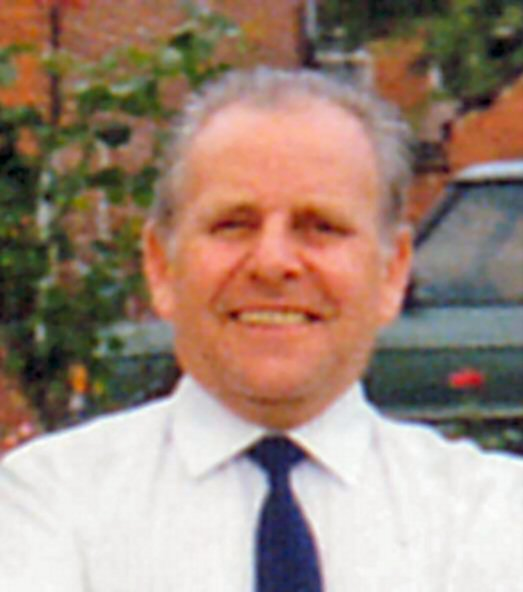
Bill Grice, Air Mechanic (Engines) 812 Squadron. now living in West Yorks. (Webmaster)
John Butterworth Pilot, 812 Squadron. now living in
Newport, S. Wales.
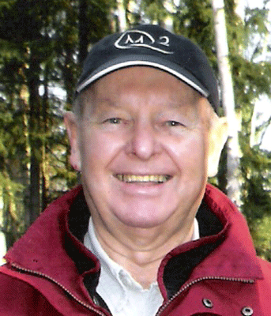
Geoff Barnes. Air Mechanic (Engines) 812 Squadron, now living in Ontario. Canada.
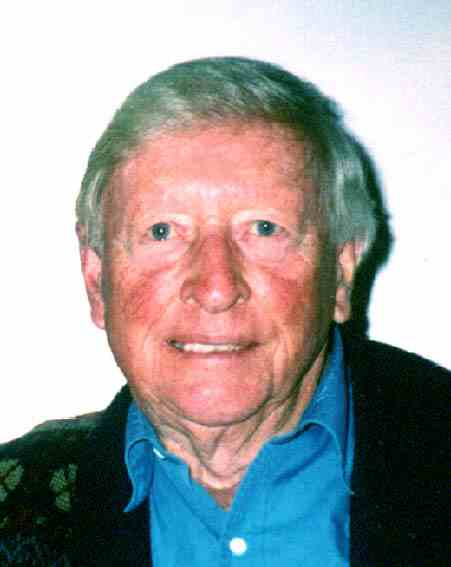
Gordon Cansdale, Air Mechanic (Engines) 812 Squadron, now living in Australia.
 John Crick, Air Mechanic (Armourer) 812 Squadron now living in Lincolnshire.
Deceased 5th April 2008.
John Crick, Air Mechanic (Armourer) 812 Squadron now living in Lincolnshire.
Deceased 5th April 2008.
 Derek Crossley, Officer's Steward, now living near Halifax. Yorks.
Derek Crossley, Officer's Steward, now living near Halifax. Yorks.
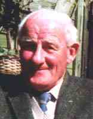
Terry (Taf) Fleming, Leading Air Mechanic (Engines) 812 Squadron, now living in Eastbourne. Deceased 17th September 2008.
 Richard Denison (Harry) Hawkesworth, Pilot, 812 Squadron now living in Taunton, Somerset.
Deceased 26th January 2009.
Richard Denison (Harry) Hawkesworth, Pilot, 812 Squadron now living in Taunton, Somerset.
Deceased 26th January 2009.
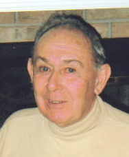
Keith Higham. Petty Officer Radio Mechanic, now living in Texas USA.
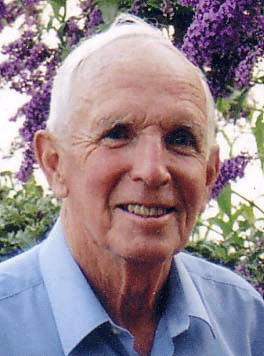
David (Jimmy) James. Pilot 812 Squadron. now living in Plymouth
 Jimmy James, Air Mechanic (Electrician) 812 Squadron now living in Workington.
Jimmy James, Air Mechanic (Electrician) 812 Squadron now living in Workington.
 Peter Pritchett, Observer, 812 Squadron, now living in
Hampshire. deceased 14th September 2006
Peter Pritchett, Observer, 812 Squadron, now living in
Hampshire. deceased 14th September 2006
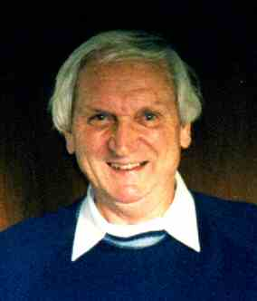
 Bill
Henley, Pilot, 812Squadron, now living in Scotland.
Bill
Henley, Pilot, 812Squadron, now living in Scotland.
 Peter Blake, Petty Officer Radar Mechanic, now living in
Cornwall.
Peter Blake, Petty Officer Radar Mechanic, now living in
Cornwall.
 .
Arthur Beale, Air Mechanic (Engines) 804 Squadron, now living in New Zealand.
.
Arthur Beale, Air Mechanic (Engines) 804 Squadron, now living in New Zealand.
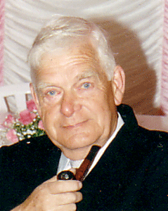
John Bingham. Air Mechanic (Airframes) 812 Squadron, now living in North Wales.
 Pat Close, Air Mechanic (Airframes) 804 Squadron, now living in Leicestershire.
Pat Close, Air Mechanic (Airframes) 804 Squadron, now living in Leicestershire.
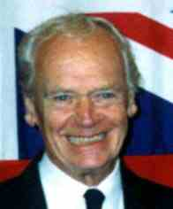
Vernon Hopcroft, Air Mechanic (Airframes) 804 Squadron, now living in Worcestershire.
 Ron
(Buzz) Leighton, Air Mechanic (Airframes) 804 Squadron, now living in Redcar,
Cleveland. Deceased 19th July 2010
Ron
(Buzz) Leighton, Air Mechanic (Airframes) 804 Squadron, now living in Redcar,
Cleveland. Deceased 19th July 2010
 Geoff
Higgs, Pilot, 804 Squadron, now living in N. Somerset.
Geoff
Higgs, Pilot, 804 Squadron, now living in N. Somerset.
 John Morton,
Pilot, 804 Squadron, now living in New Zealand.
John Morton,
Pilot, 804 Squadron, now living in New Zealand.
 Sam Renshaw, Air Mechanic (Armourer) 812 Squadron. lived in Derbyshire,
deceased
30th July 2004.
Sam Renshaw, Air Mechanic (Armourer) 812 Squadron. lived in Derbyshire,
deceased
30th July 2004.
 Joe Harris. Air Mechanic (Airframes) 804
Squadron. lived in Scotland, deceased 30 September 2001.
Joe Harris. Air Mechanic (Airframes) 804
Squadron. lived in Scotland, deceased 30 September 2001.
 Defin Williams,Air Mechanic (Engines) 804 Squadron, now living in Glamorgan.
Defin Williams,Air Mechanic (Engines) 804 Squadron, now living in Glamorgan.
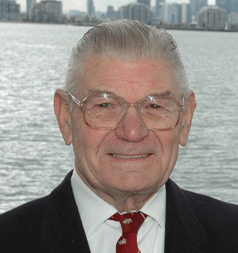
Gordon Evans. PO Air Fitter (Engines). Now living in Australia.
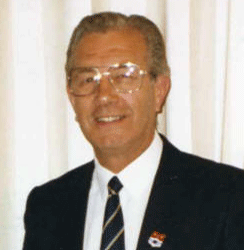
Reg Dunn. PO Radio Mechanic 812 Squadron. Now living in Durham.
 Fred Arnold. Pilot 812 Squadron, Now living in New Zealand.
Fred Arnold. Pilot 812 Squadron, Now living in New Zealand.